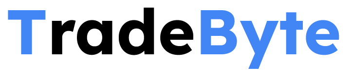

Featured Projects

TradeByte
February 2025 - Present
TradeByte is a modular crypto trading bot platform, designed to help traders implement algo strategies and analyze markets.

EURQ/USD Market Making
May 2025 - Present
Using TradeByte, I've analyzed illiquidate crypto pairs and implemented a market making strategy. Specifically, I've been using the EURQ/USD pair, which is a stablecoin pegged to the Euro.

Crumb Catcher
November 2020 - Present
A market-making strategy specializing in illiquid US options, using volatility surface extrapolation and adaptive pricing to provide liquidity in neglected contracts while managing gamma/vega risk.